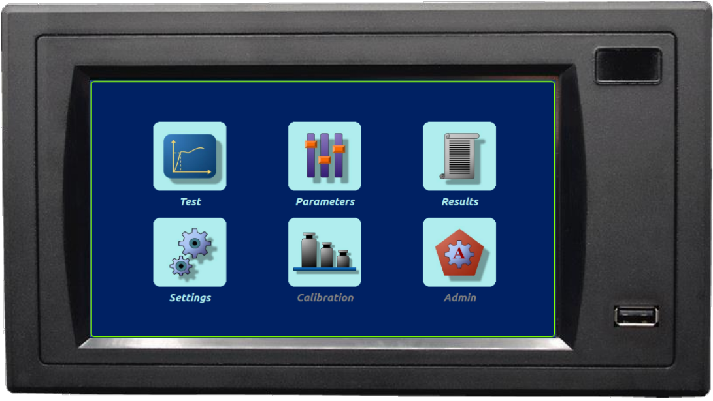

Welcome to my professional portfolio page where I showcase my work in embedded systems, firmware development and software engineering.
Embedded Devices
1- TMC742 Industrial Controller
- Overview: TMC742 is a high-performance computing device designed for advanced industrial applications.
It features two main parts: a Controller Unit based on an STM32 microprocessor
and an HMI (Human-Machine Interface) Unit based on an NXP i.MX processor.
This setup provides both robust control capabilities and user-friendly interaction, supporting complex automation tasks.
- Controller Unit: Designed for motor control, sensor readings and real-time operations.
- Firmware Development: Crafted in C for bare metal implementation.
- Peripherals: Integrated multiple components including four ADCs, a DAC, RS232, RS485, SPI, I2C, 24 volt I/Os, a Servo Motor Drive and an Encoder reader unit.
- Display Unit: Allows operators to easily configure system settings and monitor operational data, enhancing control and efficiency.
- Operating System: Developed a custom embedded system using Yocto, which included configuring u-boot, the kernel and the filesystem.
- Peripherals: Incorporated a 7-inch TFT display, touchscreen, Ethernet, USB and RS232.
- GUI: Developed multiple user interfaces for various applications using C++ and Qt, enhancing functionality and user interaction.

- Achievements:
- Global Adoption and Impact: The TMC742 industrial controller is successfully integrated into material testing systems worldwide. Renowned companies like Utest, Liya, and Hira utilize this device in their systems, demonstrating its global acceptance and effectiveness in real-world applications.
- Enhanced System Reliability and Efficiency: Through advanced firmware and system design, the TMC742 has significantly improved the reliability and efficiency of testing systems. It delivers precise control and robust performance, critical in minimizing downtime and enhancing operational productivity in industrial settings.
- Versatility in Application: The TMC742's design enables it to support a wide range of testing procedures, from geotechnical testing to complex material analysis. This versatility makes it an indispensable tool for companies specializing in diverse testing scenarios.
- Innovative User Interface Development: The development of user-friendly interfaces using C++ and Qt for the TMC742's HMI unit has greatly improved user interaction. These interfaces allow operators to easily configure system settings and monitor operational data, thereby streamlining workflows and increasing user satisfaction.
- Technological Advancements in Hardware Integration: The integration of sophisticated peripherals such as a 7-inch TFT display, touchscreen capabilities, and extensive connectivity options (Ethernet, USB, RS232) has positioned the TMC742 as a cutting-edge solution in the industrial automation and testing industries.
More details can be found on Bilkon's TMC742
An application example from UTEST's Automatic Consolidation Test.
2- LC826 Industrial Process Controller
3- Asi210 Industrial Weight Indicator